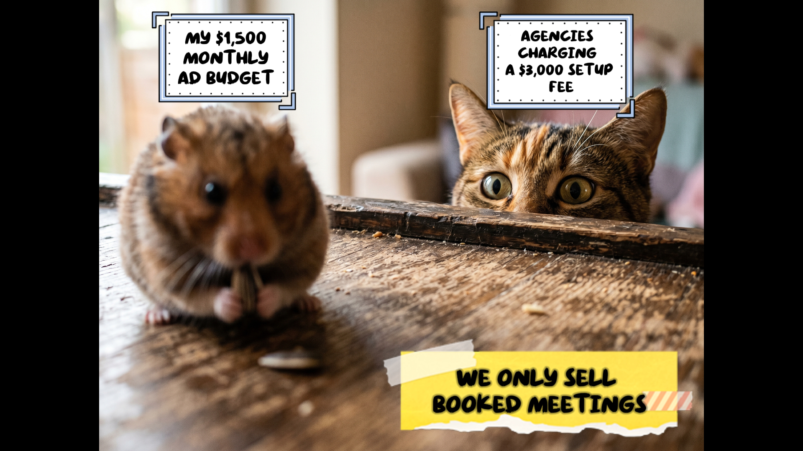
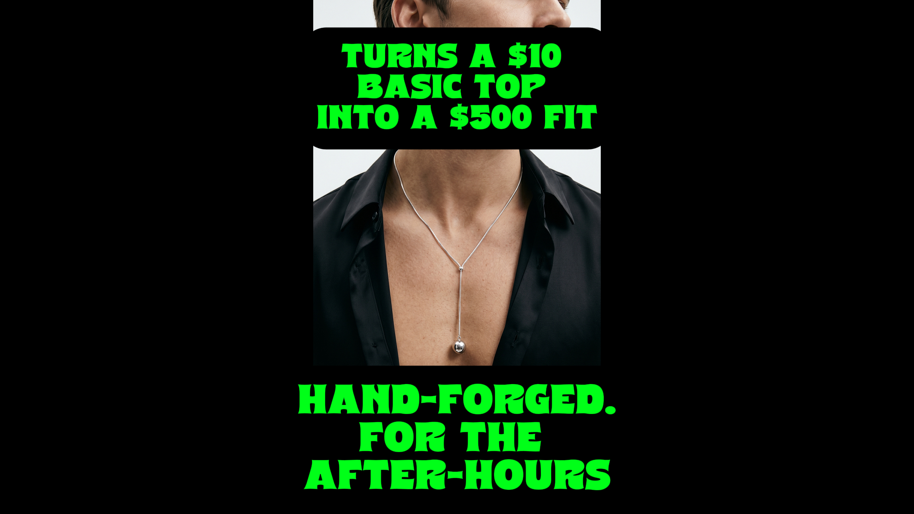
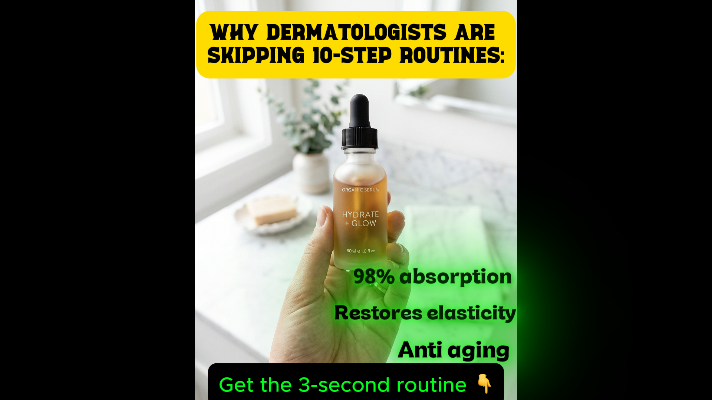

Performance Creative Strategy
Bridging the gap between raw performance data and high-impact creative execution. Managing high-volume Meta Ads ecosystems through full-funnel strategy, rapid A/B hook testing, and deep-dive consumer psychology.
Campaign Performance Snapshot
Audience & Execution Engineering
Beyond standard demographic targeting, I build Deep-Dive ICPs that map core emotions, specific pain points, and medical literacy to awareness stages.
- Develop detailed execution briefs for TOF and MOF content, complete with time-stamped shot lists and visual directions.
- Engineer multiple psychological hook variants (e.g., The "Failure" Hook, The "Busy" Hook) for rapid A/B testing.
- Utilize proprietary "Tri-Vector Testing" (Science, Vanity, Convenience) to systematically uncover winning angles.
Direct-Response Storytelling
Translating complex clinical data into highly structured, compliant visual references and long-form copy.
- Navigate strict Meta advertising constraints by developing compliant marketing mechanisms like "Bacterial Burnout" and "Muscle Starvation Syndrome".
- Write highly specific, problem-aware storytelling ad copy that targets deep emotional states.
- Incorporate organic social extensions (Hashtag challenges, UGC seeding) directly into the campaign strategy.
Deep-Dive Ad Account Audits
Before testing new creatives, I diagnose the existing funnel. Operating under strict confidentiality, I tear down underperforming accounts to find the exact bottlenecks draining budget without exposing sensitive client data.
- Creative Fatigue Analysis: Identifying when winning hooks degrade and structuring refresh pipelines.
- Funnel Friction: Mapping click-through rates against landing page conversion to isolate drop-offs.
- Audience Overlap & Pacing: Restructuring ad sets to stop internal bidding wars and optimize Meta's machine learning delivery.
The "Leak" Diagnostic
I map CTR, Hook Rate, Hold Rate, and CPA against industry benchmarks to uncover exactly why an ad isn't scaling—all completely anonymized.
Creative Execution Sample
🛡️ NDA & Compliance Notice
This video is a visual approximation of an actual top-performing ad I engineered. To strictly respect active NDAs and protect client branding, I cannot showcase the original asset. Specific product shots, branding, and text overlays have been intentionally removed from this raw footage. However, this sample effectively demonstrates my strategy regarding pacing, scene transitions, and visual hook architecture.
The "Spec Creative" Sandbox
Because my best client campaigns are strictly bound by NDA, I engineered this portfolio sandbox. Using a modern AI stack (Veo, ElevenLabs, Nanobanana) and CapCut, I rapid-prototype spec creatives across diverse verticals. This demonstrates my exact strategic frameworks for visual hook architecture, sound design pacing, and direct-response formats dominating Meta right now.
B2B Narrative: The "Dog CEO"
Video Ad Framework🧠 The Strategy Breakdown:
- PAS Framework: Visually maps the prospect's current pain (Ad Manager Burnout) to their Dream Outcome (Time Freedom as a Visionary).
- Pattern Interrupt: Uses a sharp visual zoom and audio shift at 0:06 to reset retention right when users typically scroll.
- Progressive Disclosure: Staggered text pop-ups force the viewer to keep reading, artificially inflating watch time.
High-Converting Frameworks
Static Ad & Video Psychology



🔒 Strictly Confidential
Due to strict NDAs, raw video files and specific brand names cannot be publicly shared. However, during a private walkthrough, I break down anonymized Ad Audits, showing you exactly how I diagnose failing ads, restructure campaigns, and build new creative pipelines based on raw data.
GEO, AI Systems & Protocol Architecture
I don't just execute marketing—I build the underlying SOPs, Multi-LLM engines, and Automated Workflows that allow agencies to scale production flawlessly. Here is a look at the proprietary protocols I've engineered to eradicate bottlenecks, enforce brand integrity, and bridge technical SEO with high-volume, AI-driven content operations.
Master AI Content Protocol
Architected a robust multi-LLM (Claude/Gemini) content engine deployed at the agency level. Eliminates AI fluff and hallucination at scale.
⚡ GEO & AI Search Impact ▼
AIO Snatch Blocks: Forces the generation of concise, 2-to-3 sentence definitive answers directly beneath H2s for Google AI Overviews to easily extract.
Defeating the Fluency Heuristic: Mandates asymmetrical paragraph burstiness and high-perplexity vocabulary to bypass AI detectors and Model Collapse.
Information Gain: Uses automated constraints to force placeholders (e.g., [INSERT STAT]), grounding content in factual, citable data for Perplexity.
The "Foundational Triad"
A proprietary research framework extracting raw market data, consumer dealbreakers, and core fears straight from competitor reviews.
⚡ Intent & Click Defense ▼
Zero-Click Defense: Engineers psychological hooks specifically designed to make users bypass AI-generated summaries and click directly to the client's site.
Competitor Gap Analysis: Bulk-scraping Google Maps reviews to mathematically map "Table-Stakes" and local "Unmet Needs" to feed into LLM training contexts.
Automated SEO Workflows
Designed Master Content Spreadsheets integrating Keyword Mapping, On-Page QA, VA Checklists, and Technical SEO tracking into a single source of truth.
⚡ Scale & Automation ▼
Cross-Functional Pipelines: Frictionless bridge between Technical SEO architecture and daily VA/Content execution.
Programmatic Ready: Frameworks built to easily transition into headless CMS or n8n/Make automated data-to-page pipelines.
Master Schema Protocol
Engineered a strict implementation protocol for advanced @graph JSON-LD schemas. Resolves complex multi-location entity logic to spoon-feed LLMs.
⚡ LLM Entity Anchoring ▼
RAG Retrieval Optimization: Spoon-feeds LLMs conflict-free brand nodes so ChatGPT confidently understands and cites the client.
The Global Power Block: Injects the primary business entity into the Global Site Header to act as a unified, conflict-free Source of Truth site-wide.
Semantic Entity Mapping: Natively structuring LSI & NLP entities into the schema so AI instantly recognizes topical authority.
Dynamic ICP & XML Web Copy
A programmatic XML framework used to feed LLMs complex, mathematically locked SEO targets and UI/UX constraints. Beyond simple demographics, it maps specific buyer anxieties to funnel awareness stages, perfectly aligning product messaging with consumer intent.
⚡ View XML Mechanics ▼
Decision Clarity Framework: Explicitly forbids subjective marketing "claims" (e.g., "We are reliable"), forcing the LLM to output objective "mechanisms" (e.g., "Upfront Flat-Rate Pricing").
Intent Routing Logic: Dynamic XML that automatically trims cognitive overload sections for "Emergency" service pages.
Anti-Fluff Prompting: Extracts the client's actual audio transcripts to build custom LLM system prompts featuring their exact vocabulary and slang.
Veterinary Video Content
Translating complex clinical concepts into engaging, high-retention video formats for massive pet audiences.
▶ Catster YouTube Channel
I act as the lead on-camera talent, manager, and primary scriptwriter for the Catster YouTube channel. My work simplifies pet care, builds brand trust, and drives engagement through deep audience understanding and organic visual hooks.
View Channel